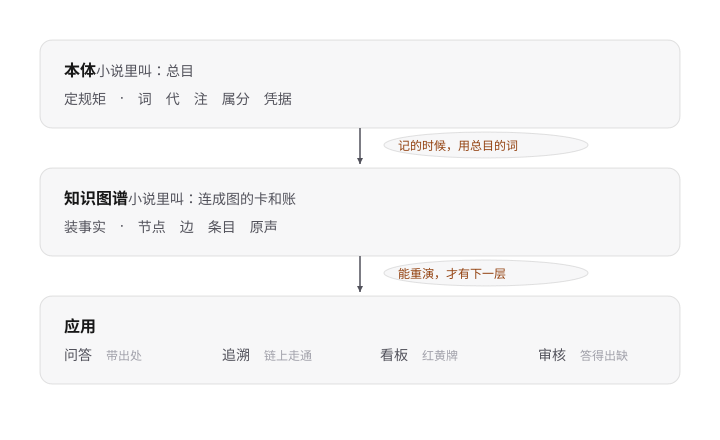
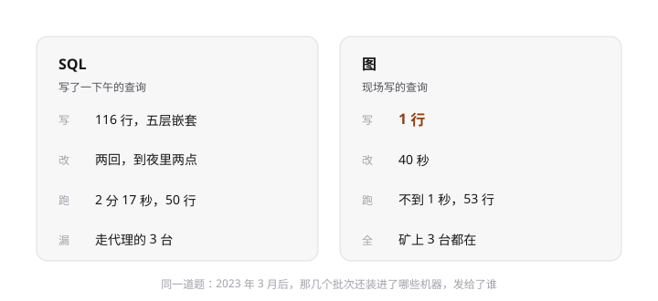

改动：图脚引文"总目是图纸卡是砖"规模注（519节点→3800台→129条）"——图纸/建筑"隐喻词五要素胶囊阵 → 三层各一行定位词，两条约束线用短语胶囊。全图焦点：三层各管什么。

改动：底行金句"今天差的不是秒数——写得短改得快""五百个节点谁家都快"VS 圆圈装饰"当场对决"戏词 → 两卡四行纯数据对照，唯一强调色给"1 行"。

确认结论：本环境无生图工具（子智能体逐项核对过，唯一相关工具是网上搜图，已禁用）。你之前能用是在 Codex 环境。路径待定：A）我把生图提示词写成任务书文件，你拿到 Codex 里跑 image_gen；B）继续 SVG 精绘打磨。等你定。